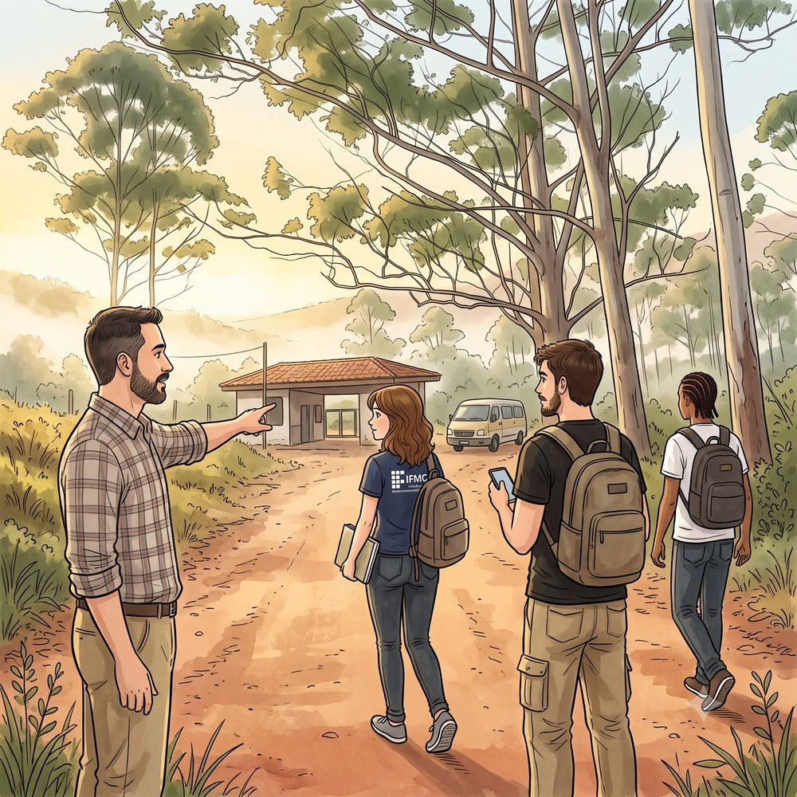
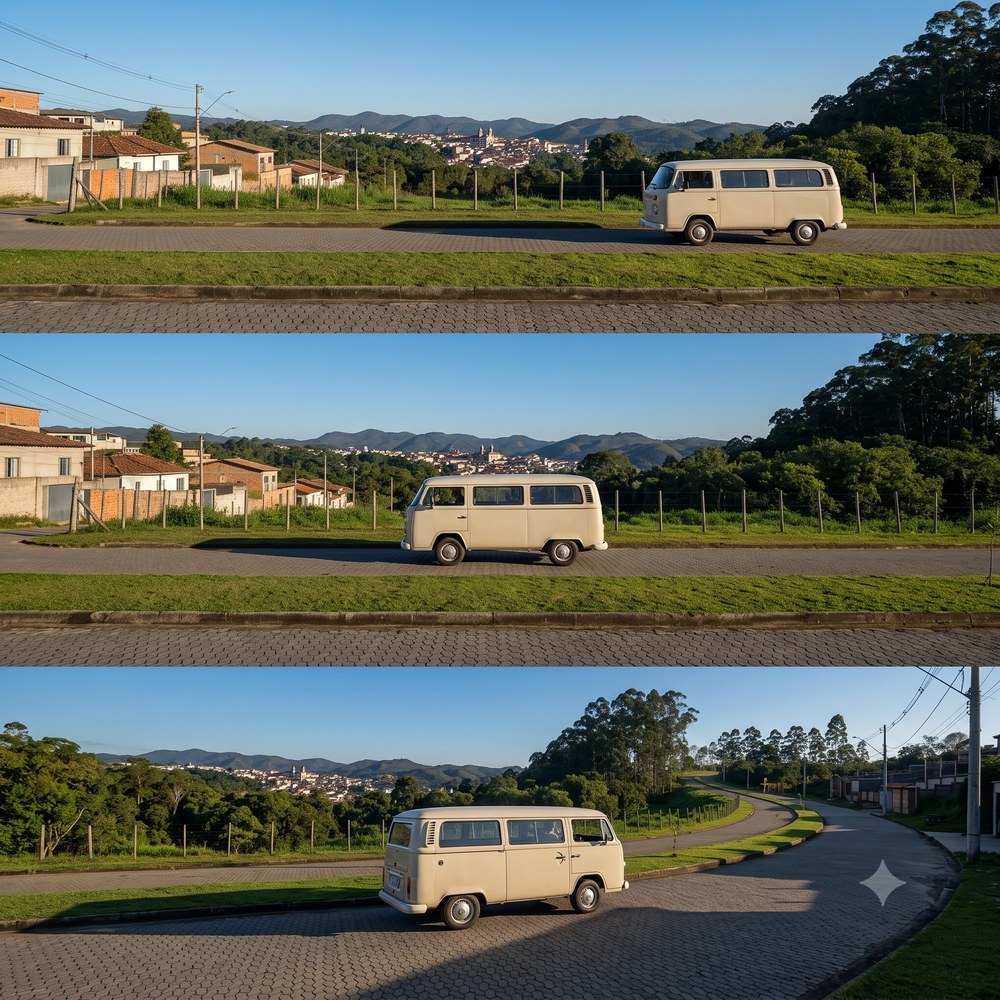
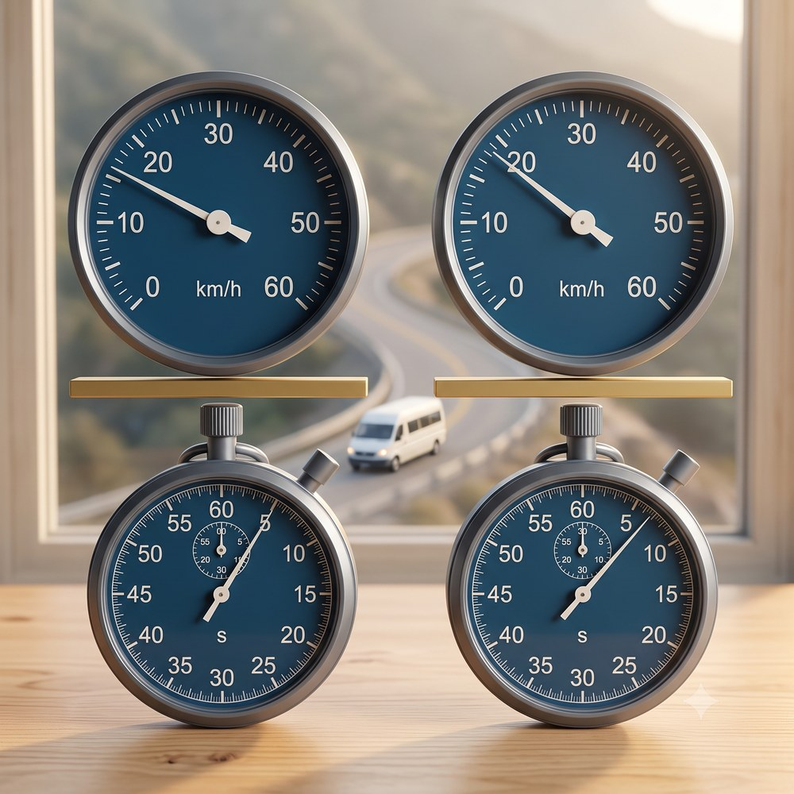
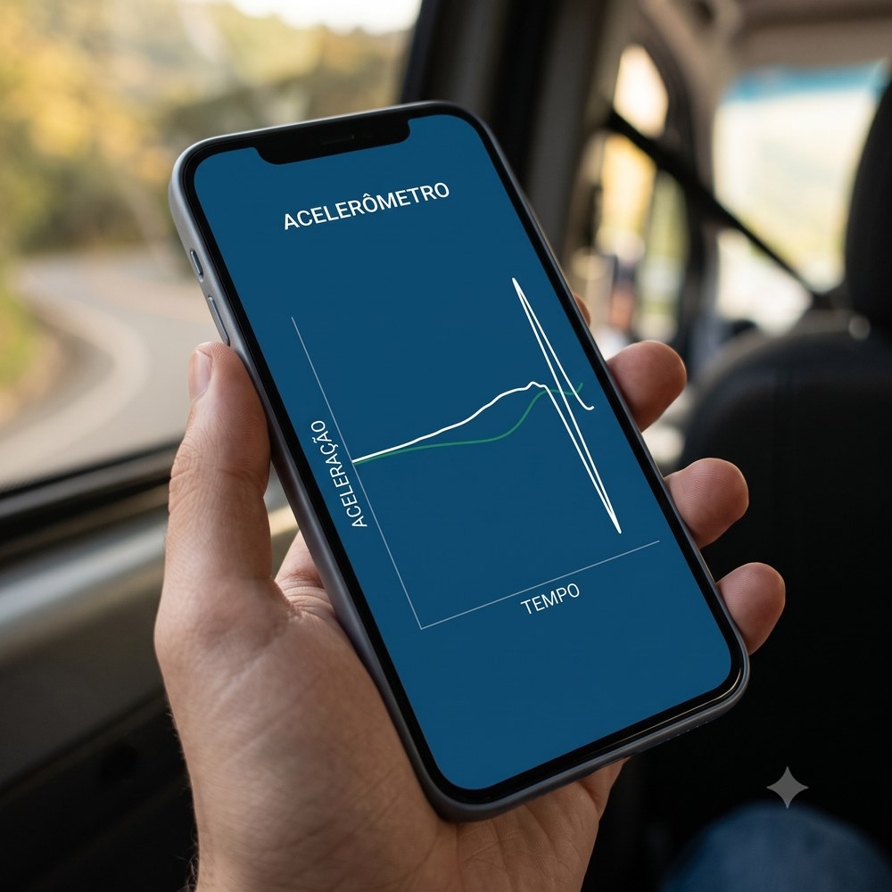
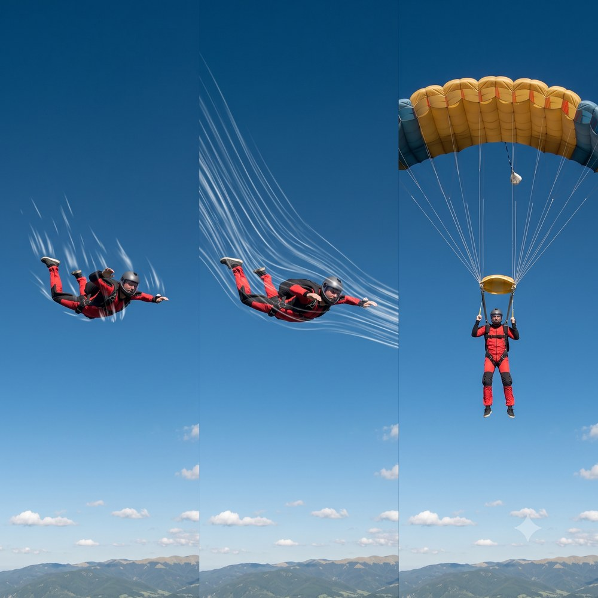
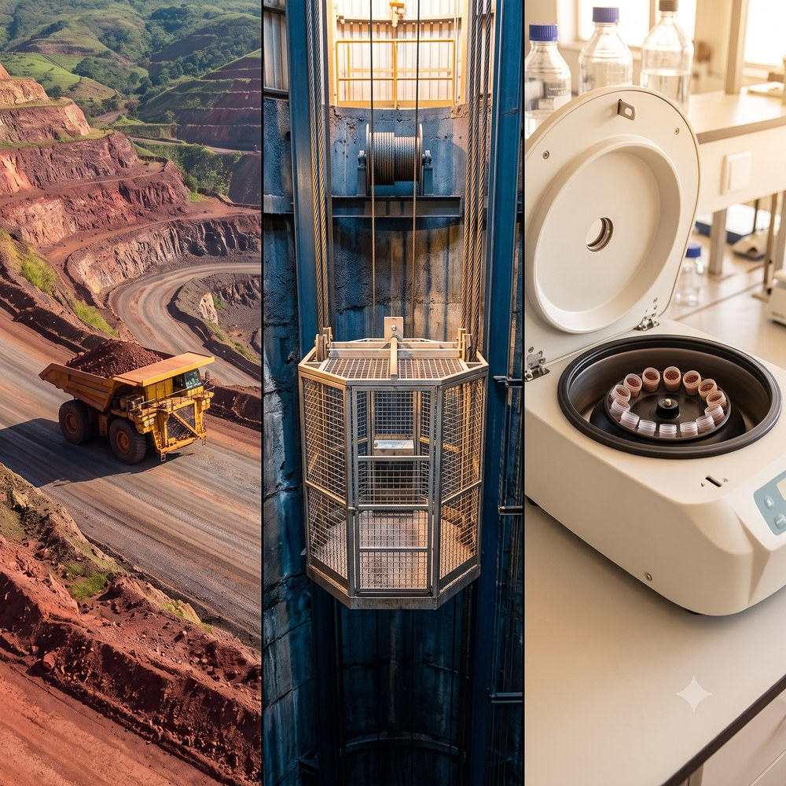
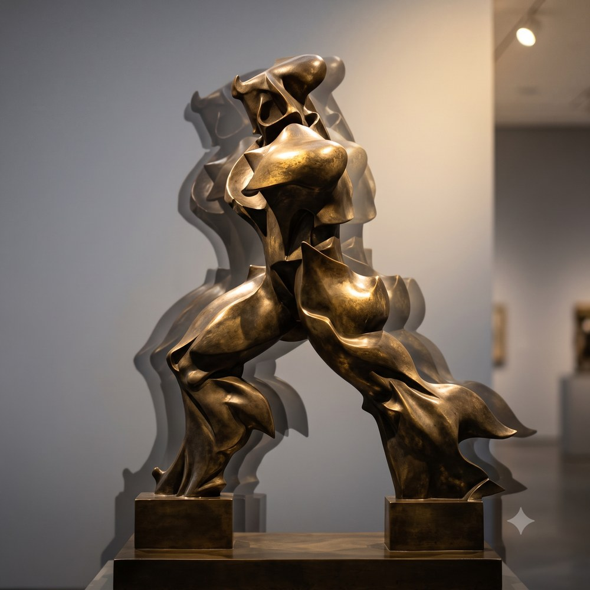

“Se velocidade é a taxa com que a posição muda, o que é a taxa com que a própria velocidade muda?”
Aceleração. E ela responde também por que quem freia trezentas e sessenta toneladas numa rampa de cava precisa saber essa conta antes de descer.

Exemplo — a van na subida: sai parada e chega a 36 km/h = 10 m/s → Δv = +10 m/s. Na freada seguinte, de 10 m/s até parar → Δv = −10 m/s.
Conclusão: o corpo não sente a velocidade — sente a mudança dela. No trecho reto a 80 km/h dá para equilibrar uma garrafa no painel.

A carga solta não é jogada para fora da curva: ela continua reto enquanto o veículo vira. É inércia, e foi o que derrubava carga dos carros de boi nas ladeiras de Vila Rica.

Exemplo — a van: 10 m/s ganhos em 8,0 s → am = +1,25 m/s². Ao fim do 8.º segundo ela está a 10 m/s.
Aviso: o sinal da aceleração, sozinho, não significa nada. Caminhão com v = −8,0 m/s e a = −0,5 m/s² está GANHANDO velocidade.
| Δt | 4,0 s | 2,0 s | 1,0 s | 0,5 s | 0,1 s |
|---|---|---|---|---|---|
| am (m/s²) | −2,50 | −3,60 | −4,00 | −4,16 | −4,20 |
Os valores convergem: a partir de certo ponto, encolher o intervalo já não muda a resposta.
A média deu −2,5 m/s²; o corpo foi jogado no pico de −4,2 m/s² — quase o dobro. É o pico que a norma limita.

O mesmo sensor de três eixos do celular existe, em versão industrial, no painel de um caminhão de 360 toneladas — e é sobre os picos que atua a análise de risco.

Exemplo — a cachoeira: 10 m de queda dão t = 1,4 s e chegada a 14 m/s (≈ 50 km/h). O fio d’água afina na descida porque acelera.
A 200 km/h o paraquedista tem aceleração zero e não sente nada além do vento: dá para estar muito rápido e não estar acelerando.
| Equipamento | Grandeza | Valor típico |
|---|---|---|
| Retardador hidráulico | desaceleração | ≈ −1,2 m/s² |
| Gaiola de poço — arranque | aceleração | ≈ +0,5 m/s² |
| Centrífuga de laboratório | centrípeta | ≈ 1.000 g |
A 40 km/h o caminhão para em 51 m; a 50 km/h, em 80 m. A velocidade entra ao quadrado — e os 70 m regulamentares deixam de bastar.

Acelerar não é só ir mais rápido: é qualquer mudança na velocidade — no tamanho dela ou na direção dela.

Análise: a média apaga tudo o que aconteceu no meio. O que empurrou o trio contra o banco, o que os jogou para a frente, o que faz a água chegar ao poço a cinquenta por hora e o que faz um paraquedas doer nos ombros — nada disso está na média. Está no instante.
“É o artista que é verdadeiro, e é a fotografia que mente; pois, na realidade, o tempo não para.” — Auguste Rodin (1840–1917).
Na próxima trilha, o caso mais simples de todos ganha nome próprio: o movimento em que a aceleração é exatamente zero e a velocidade não muda nunca — o Movimento Uniforme. O que hoje foi sensação, amanhã será previsão.
Sucesso na Provinha!
| # | Slide | Tempo (m:ss) |
|---|
Alterações ficam salvas no navegador (localStorage). Este slide é oculto por padrão — acesse pelo botão ⚙ G ou pelo Overview (O).